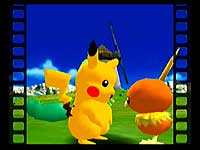
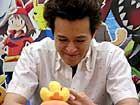
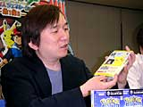
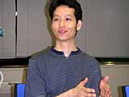
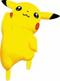
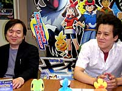
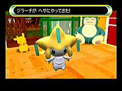
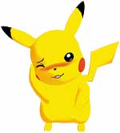
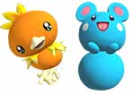

N.O.M これは『ピカチュウげんきでちゅう』の続編と見ていいんでしょうか。
石原 『ピカチュウげんきでちゅう』というゲームは、完全にピカチュウとのコミュニケーションゲームでしたよね。「ポケモンチャンネル」では、NINTENDO64というプラットホームからGCに移って、ピカチュウとのコミュニケーションの形を追求して、新しい可能性や要素をたくさん入れて、ちょっと違う形で突き詰めていった結果こうなった…、という感じです。
N.O.M ゲームジャンルは"コミュニケーション"なんですね。
石原 ゲームジャンルを決めるとき、僕は"テレビゲーム"って入れたかったんですよ。そしたら、スタッフに「それじゃ意味がわかりませんからダメです！」って言われて、結局"コミュニケーション"になりました。「わからなくないよ、"テレビゲーム"だ！」って言ったんですけどね。だから本当は"テレビゲーム"なんです(笑)。
N.O.M "テレビゲーム"と言われると、つい納得してしまいそうな呼称ですね(笑)。
松村 6月末のイベントに出展されたときは、"テレビゲーム"ってなっていたんですけどね…(笑)。
N.O.M 構成などに関して、気を使った部分はありますか？
石原 例えば、普段テレビを観ているときって、チャンネルをしょっちゅう変えますよね。だけどそれをゲームのなかでやってしまうと、プレイヤーは番組を全部、中途半端な状態で観ることになりかねません。テレビならそれが普通なんですが、これはあくまでゲームだから、それだと分かりづらいですよね。ですので、いつチャンネルを変えたら必ず冒頭から始まったり、逆に必ず変える前と同じところから始まったりするように、番組ごとに調整しています。
N.O.M いわゆる"育成ゲーム"ではないのに、ピカチュウの育成的な要素を取り入れたというのはなぜなんですか？
小澤 まずプレイヤーがいますよね。その向こうにテレビ画面があって、さらにそのなかにテレビがある。その不思議な状態をつなぐものとして、ピカチュウがいるんです。ピカチュウにリアリティがないと全体がうそっぽくなってしまう。だから、ピカチュウが実際にそこにいるように感じてもらうための工夫をたくさん盛り込み、そのなかに育成的な要素もあるというわけです。
N.O.M ゲーム性として訴えたいポイントが明確にあるというよりは、どう捉えるかという部分はユーザーに委ねているんでしょうか？
石原 はい、完全に委ねちゃってます。プレイヤーの皆さんそれぞれにおまかせです。
N.O.M 実際の対象年齢はどのへんなんでしょう？ やはりポケモンというと小学生を始めとしたお子さんに人気があるわけですけれど。
石原 たしかにポケモン自体は、小学生などのお子さんのファンが多いんです。ですがさきほども言ったように、テレビやゲームとその人との関わり方や、メディアとして捉えたときの反応というものは、個人個人や年齢によって違うはずなんです。だから一口に「これはお子様向けですよ」、ということはありませんね。お子さんはもちろん楽しめると思いますが、大人でもじゅうぶん楽しめるものになっているはずです。もちろん、ピカチュウは大人が見てもかわいいですから(笑)。
N.O.M 発売日が映画版の公開日と連続していて、夏休み前になっていますが、これは夏休みめがけて合わせたんでしょうか。
石原 えー、本当はもっと早く出したかったんですが、作っていたら結果的にそうなったというだけの話で…(笑)。
いやいや、そこは開発の"超技術"で映画公開と夏休みに合わせたわけです(笑)。
松村 作っているほうとしては、いつももっと早く出すつもりだったりするんですが、「すみません、作っていたら…」という感じでなかなか早くは出せないですね。詰め込みたい要素とかっていうのは、後から後からどんどん出て来ちゃうんですよ。でもちょうどタイミングも合ったので、それでいいんじゃないかと(笑)。
N.O.M ポケモンの映画の特典映像が納められた「番組拡張ディスク」がついていますが、現在公開中の「ポケットモンスターアドバンスジェネレーション 七夜の願い星 ジラーチ」とリンクしていますよね。
石原 そうですね。映画に出てくる幻のポケモンの"ジラーチ"も出てきますし。まずこのソフトを発売日に買って徹夜でやってもらって、ゲームのなかでジラーチに会って、翌日には寝ないで映画を観てもらうということも可能です(笑)。
N.O.M ディスクを二枚組にしたのは容量的な問題ですか？
石原 拡張ディスクに入っている映画の特典映像なんかは、まさに今が旬なわけです。なので、いつプレイしても楽しめるものが基本の本体のディスクとしてまずあって、拡張ディスクではそのときの旬の情報を楽しんでほしいなと。またいずれ、別の拡張ディスクが出ないとも限りませんよ。
N.O.M ところで、ピカチュウの仕草でいちばん好きなところはどれでしょう。私はエクササイズで腰を振ってるのが好きなんですが(笑)。
石原 番組の合間に流れるキャッチをピカチュウが歌いますよね。「ピッカ ピカ ピカピッカ♪」って。あれってゲームが進むにしたがって、徐々に歌が上手くなっていくんですけれども。"陰のディレクター"に川村というのがいるんですが、作詞作曲をすべてオリジナルで作ったんですよ。それを声優の大谷さんが、上手くなっていく段階の全部のバージョンを、そのために歌ってくれてるんですよね。そういうことも含めて見てみると、あれはすごくいいなと思いますね。
小澤 僕はチャンネルの変え方を教えてくれってピカチュウが言ってくるんだけど、教えないでいるとガックリしてるような所とかですね(笑)。やり方を教えてあげたり、許可してあげたりしたほうがいいところを、わざとしないでいることで見られる仕草もいくつかありますよ。
松村 僕ははじめのほうで、ろくに番組を観ないで外に出ようとすると、開けたサッシをピカチュウがピシャッと閉めてしまう所なんかですね。あとはテレビのなかに入ろうとして画面にぶつかったり、バチバチ叩いたりしてるのを見ると、「こいつおバカでかわいいな〜」って思います(笑)。
N.O.M ピカチュウのほかにも出てくるポケモンはぜんぶで100種類を越えるそうですが、みんなかわいいですね。
石原 ピカチュウが主体なので、彼の友達ならこんな感じかな、というのを中心に集めているんですよ。全部のポケモンを出す必要性はありませんからね。ピカチュウが基準なので、だいたいかわいいポケモンが多いと思います。声優さんたちも頑張ってくださったので、かわいいポケモンの声はピカチュウだけじゃないということで、メロメロ度はかなり高いと思われますね(笑)。 |